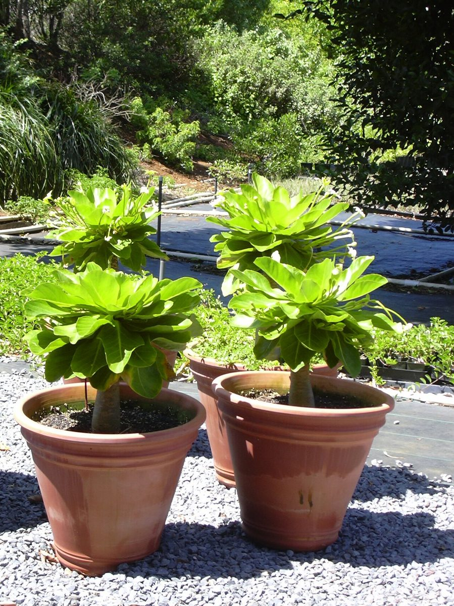
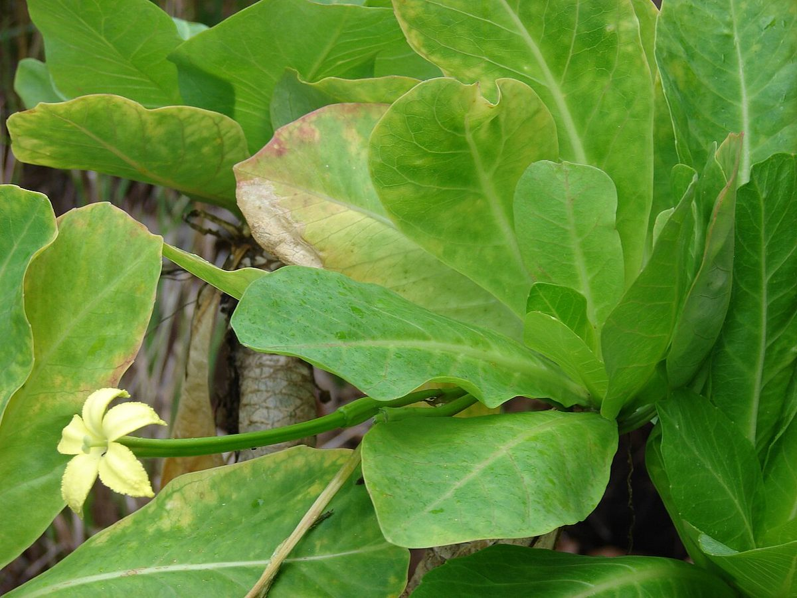
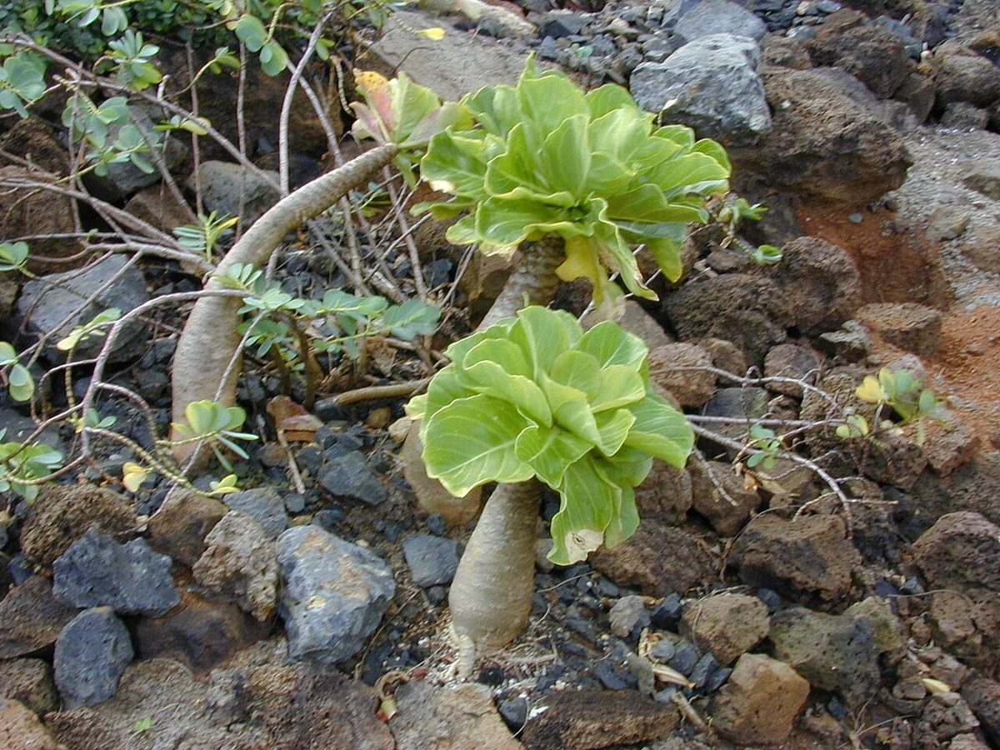

Brighamia insignis
ʻālula, ʻōlulu, pua ʻala · cabbage on a stick, vulcan palm




Quick facts
| Family | Campanulaceae |
|---|---|
| Scientific name | Brighamia insignis |
| Hawaiian name(s) | ʻālula, ʻōlulu, pua ʻala |
| English name(s) | cabbage on a stick, vulcan palm |
| Status | Endemic |
| Conservation | US Endangered (USFWS 1994; 2022 5-Year Review confirms no known wild individuals, new 5-year review initiated September 2025); IUCN Extinct in the Wild (assessment updated 2023) |
| Coastal zones | Sea cliff |
| Occurrence | Endemic to sea cliffs of Kauaʻi and (formerly) Niʻihau. Historically present on the Nā Pali cliffs; wild plants are now vanishingly rare and the species is effectively extinct in the wild. Only observable in situ from offshore near Kalalau, Honopū, and Nuʻalolo Kai (and often not at all); commonly encountered ex situ in botanical gardens and restoration plantings on Kauaʻi. |
How to identify
- Growth form
- A striking succulent-stemmed cliff plant with a single, thick, upright stem swollen at the base — resembling a bowling pin — topped with a dense terminal rosette of thick fleshy leaves. The whole silhouette reads as "a cabbage stuck on a club."
- Size
- 1–5 m tall.
- Leaves
- Thick, fleshy, spatulate to obovate, 10–20 cm long, pale green with a slightly glossy surface, clustered tightly in the terminal rosette. Older leaves fall to leave leaf-scar rings on the stem.
- Flowers
- Long-tubed, cream to pale yellow, 6–14 cm long, fragrant at night, in axillary clusters at the top of the stem — historically pollinated by a native Hawaiian hawkmoth now presumed extinct, which is why in situ fruit-set collapsed and hand-pollination sustains the species today.
- Fruit / seed
- A capsule containing many small seeds.
- Bark / stem
- Pale grey-green, smooth, thick and succulent; ringed with leaf scars from previous rosettes.
- Where it sits on the coast
- Nearly vertical sea-cliff faces of the north-west Kauaʻi coast, on ledges above ~50 m elevation. Never on the beach or in valley bottoms.
Clinchers (features that lock the ID)
- The "cabbage on a stick" silhouette — a single swollen stem with a terminal leaf rosette.
- Long tubular pale-yellow flowers in the rosette axils.
- Grows on vertical or near-vertical Nā Pali sea cliffs — habitat alone almost identifies it.
- Endemic to Kauaʻi–Niʻihau; if you are elsewhere, it is not Brighamia insignis wild.
Look-alikes
- Brighamia rockii — The sister species, endemic to sea cliffs of Molokaʻi and Maui-Nui (not Kauaʻi); flowers pure white rather than cream-yellow, corolla with narrower lobes. Off-island geography settles it.
- Cultivated succulents / Cabbage tree (Cordyline) — Cordyline (kī / tī plant) is a soft-tissue shrub of forest understorey with strap leaves and unswollen stem; not remotely a cliff succulent.
Ecology
Long-lived cliff endemic dependent on its now-vanished specialist hawkmoth pollinator. Documented population declines and the extreme scarcity of natural recruitment led to intensive rope-access hand- pollination programs and to comprehensive ex situ collections (National Tropical Botanical Garden and international botanical gardens) that now hold most of the world's living ʻālula. [1], [2], [3], [4], [5], [11], [55], [56]
Cultural significance
ʻĀlula is a signature endemic of the Nā Pali coast and a symbol of Kauaʻi's cliff botany in both cultural and scientific writing. Its decline is a working example, cited in Hawaiian conservation discussions, of what "endangered" means when the pollinator disappears.